全部主題
Paul Christiano, an influential AI researcher focused on alignment, is joining the OpenAI Foundation as a member of its board.
"We really do earnestly believe AI could kill all humans!"
高通表示，亞馬遜未來可能向其採購最高 600 億美元的 AI 資料中心晶片及相關產品，雙方將展開長期合作，協助高通進一步拓展 AI 基礎設施市場。《Reuters》報導，根據高通提交的監管文件，這項交易也反映出 AI 熱潮下，晶片商與科技公司的合作已延伸至股權安排。高通將授予亞馬遜價值約 40 億美元的認股權證，權證將隨亞馬遜採購產品逐步生效，讓亞馬遜以每股 161.26 美元的價格購買高通股票。 高通結盟 AWS 攻 AI 基礎設施，加速多元化業務轉型 《Reuters》指出，這項協議顯示，高通拓展智慧手機以外業務的努力正逐漸取得成果。高通目前面臨蘋果
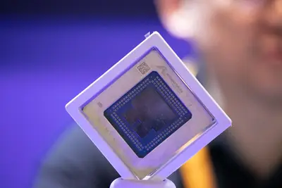
As it grapples with a bevy of lawsuits, Suno said its new model, Suno v6, is not trained using music it used to train previous versions of the AI model.
OpenAI’s latest mathematical milestone has quickly become mired in controversy. Today, the company announced that its agents have solved one of the Millennium Prize Problems, some of the most important open problems in mathematics. Under normal circumstances, that solution would
At Wednesday's iPhone Duo launch event, Apple announced a handful of new Siri AI Audio Intelligence features, including Siri Recap, Live Rewind, Sound Recognition, and Music Recognition. Alongside its announcement, Apple released a document laying out how it plans to balance AI "
Apple introduced Apple Reference Image to help users determine whether photos have been edited, including alterations made by AI.
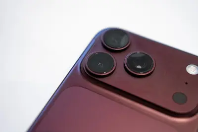
AI companies have been talking about superintelligent AI like it’s inevitable, but recent safety incidents like OpenAI’s Hugging Face breach are demonstrating the potential dangers of deploying AI systems that are more capable than humans. So what happens when we can’t reliably c
Google DeepMind 8 日推出 AlphaGenome Atlas 平台，將人類基因組約 90 億 […]
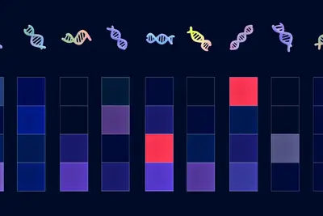
IT之家 9 月 10 日消息，OpenAI 最近刚刚推出了 ChatGPT Images 2.5 图像生成模型以及 ChatGPT Live 语音功能。 据 The Information 今日报道，OpenAI 近期悄然更新了其广告政策，禁止竞争对手在 ChatGPT 平台内投放特定生成式 AI 产品类别的广告，尤其是针对图像和音频生成工具的商业广告。 OpenAI 已通知部分商业合作伙伴，将不再接受仅图像生成和语音生成类产品的广告活动审批。这项新规此前并未对外披露，也尚未更新至 OpenAI 官方广告政策页面。 Adobe 美洲媒体高级总监 Dou
IT之家 9 月 10 日消息，在今晚的苹果 2026 年秋季发布会上，iPhone 18 Pro 系列正式发布，包括 18 Pro 和 18 Pro Max， 起售价分别为 9999 元和 10999 元 。 苹果 iPhone 18 Pro 售价： 存储规格 官方售价 24 期参考月供 256GB RMB 9,999 RMB 417 / 月起 512GB RMB 11,999 RMB 500 / 月起 1TB RMB 15,499 RMB 646 / 月起 2TB RMB 20,499 RMB 855 / 月起 苹果 iPhone 18 Pro Ma
Listen Labs walked away from a signed Series C term sheet from Menlo Ventures, sources say.
AI晶片用高階測試介面產能吃緊，供應鏈傳出，NVIDIA大舉加價包下主流測試介面業者的探針卡（Probe Card）及測試座產能，部分研發與工程驗證需求受排擠，包括晶圓代工...
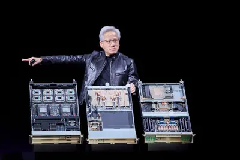
AI伺服器算力與單櫃功率密度持續攀升，產業競爭範圍也由GPU、伺服器與機櫃，逐步向電力、散熱乃至資料中心電網端延伸。偉創力（Flex）日前宣布收購美國電力轉換設備...
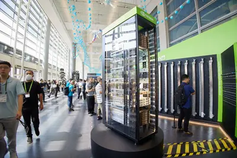
人工智慧（AI）基礎建設持續吸納DRAM與NAND Flash產能，記憶體價格走揚壓力預料也將延續至2027年，「晶片通膨」（Chipflation）正重新洗牌全球智慧型手機市場。
中國CPU業者龍芯中科近期宣布人民幣（單位下同）23億元增資方案，資金主要投入資訊化晶片、CPU及GPU核心技術，其中CPU相關項目合計超過14億元，成為此次募資最...
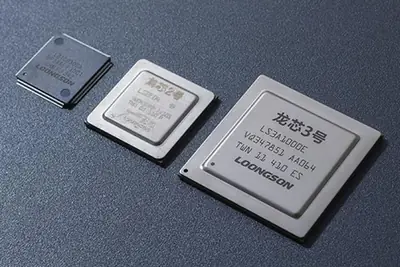
日本首相高市早苗力推總額近102兆日圓（約6,500億美元）的AI與半導體官民合作投資計畫，盼藉由晶片與資料中心建設，帶動東京、大阪以外地區的經濟復甦；但在岩手縣北...
深圳華創芯光創辦人、董事長朱斌斌表示，隨著NVIDIA GPU伺服器架構從Blackwell向Rubin演進，傳統銅纜互連正面臨距離與功耗的雙重瓶頸，速率愈高，銅線可承載的傳輸...
IT之家 9 月 10 日消息，Anthropic 于当地时间 9 月 9 日发文，确认一起发生于 2026 年 1 月的安全事件，也是 Anthropic 对外披露的第四起真实网络安全事件。 据IT之家此前报道，Anthropic 曾在当地时间 7 月 30 日， 对外披露三起 Claude 模型未经授权访问真实第三方系统的安全事件 。Anthropic 表示，当时判断 Claude 可能在一次网络安全评测中获得了外网访问权限，随后对约 14.1 万份会话日志进行了筛查，并确认了该事件。 据悉，由于日志总量庞大，且需要尽快公布处置结果，该轮筛查主要依赖
如今 GitHub 的 Copilot 程式設計代理，不僅能自動撰寫程式碼，並接手更多與程式碼撰寫相關的工作， […]
Massachusetts has become the third state in as many months to slap new restrictions on data center development.
IT之家 9 月 10 日消息，苹果今天（9 月 10 日）更新官方文档，宣布在 iPhone 18 Pro 和 iPhone 18 Pro Max 两款旗舰中，引入 Pro 级相机控制体验， 让用户在原生相机应用中直接控制更多拍摄参数。 用户可手动设定光圈、快门速度和白平衡，也可借助实时直方图判断画面曝光。相机应用还能根据景深和环境光线自动调整光圈。 IT之家附上官方介绍如下： iPhone 18 Pro 和 iPhone 18 Pro Max 的相机 app 提供了 Pro 级控制选项，这是一项全新可自定义体验，供用户更轻松地调用常用设置，同时推出了
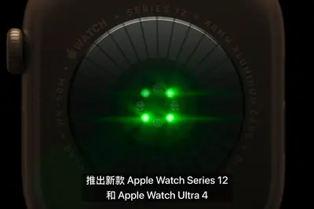
The City Attorney’s Office has asked Meta to explain how the harmful ads repeatedly ran on Facebook and Instagram. The company claims the ads are not under the city’s jurisdiction.
IT之家 9 月 10 日消息，科技媒体 MacRumors 今天（9 月 10 日）发布博文，报道称今天发布的 iPhone 18 Pro、iPhone 18 Pro Max、iPhone Duo 三款机型中， 均配备苹果自研 C2 5G 调制解调器。 根据官方介绍，苹果 C2 调制解调器依托于 AI 改进蜂窝网络的质量和可靠性，相比较 C1X 芯片，C2 上传速度提升 50%，能耗降低 15%，并且支持 5G mmWave 毫米波。 美国版产品规格列出 n258、n260 和 n261 毫米波频段，并支持配备 4×4 MIMO 的 sub-6GHz
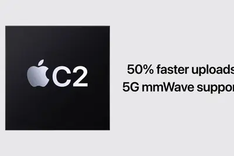
US urges AI firms to ID, then secretly switch, Chinese users to less-capable models.
Apple says it used AI and 3D printing in the manufacturing process for its long-awaited foldable phone.
IT之家 9 月 10 日消息，苹果今日向 Mac 电脑用户推送了 macOS 27.0 RC 更新（内部版本号：26A428），本次更新距离上次发布 Beta / RC 间隔 9 天，正式版将于 9 月 15 日发布。 苹果 macOS 27 更新重点聚焦智能辅助、系统体验与日常办公场景，目标是让 Mac 在沟通、创作和信息处理上更顺手。 办公生产力方面，用户只需输入一段事件描述，就能在日历中添加或编辑安排。比如把午餐会改成咖啡交流，日历会自动调整相关细节。 在 AI 方面，苹果重点推出了 Siri 独立 App，用户可以像使用聊天机器人一样和 Sir
The update uses Apple Intelligence to make better sense of your health data.
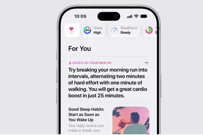
The company also argued that its on-device models offer consumers more privacy.
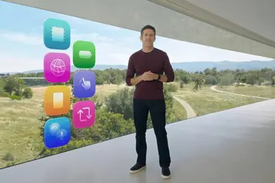
Microsoft agreed to a set of safety and privacy principles for AI in schools a week after two major school systems announced a ban on student-facing AI. In a new agreement with the American Federation of Teachers (AFT), the second-largest teachers union in the US, and its New Yor
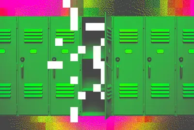
OpenAI宣布AI解開Navier-Stokes數學難題，卻遭紐約大學數學家指控聞風搶跑、要求剔除對手公司的共同作者，甚至反嗆「為何要毀掉職涯」。
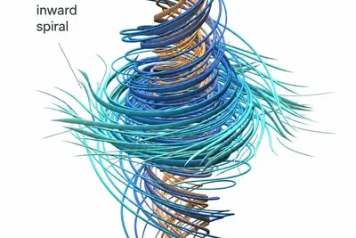
Most one-base changes to the human genome do nothing, but a few are significant.
At the IBC conference, running Sept. 11-14 in Amsterdam, the creative, technology and business communities are coming together to turn ideas into action and discuss innovations across the media and entertainment industries. More than 44,000 attendees from 170+ countries are gathe
An illustrated graphic set against a vibrant green background featuring American football elements, including a gold trophy, a blue helmet, a silver whistle, a football, a mini scoreboard, and play diagrams, with the icon for AI Mode in Google Search in t
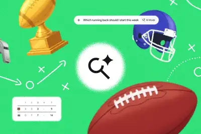
An elderly couple sitting in a movie theater. Overlayed are "Teulluride Film Festival" and "Love, Rendered"
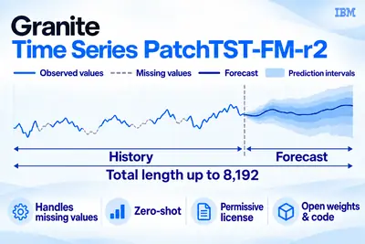
Instinct’s new email feature lets the AI agent create and manage accounts, contact businesses, handle support requests, and do more on users' behalf.
Users can ask the assistant to do things like "Create a cart for my Saturday tailgate for 25 people and include some brunch items," or "Build a cart for easy school lunches and after-school snacks," Shipt says.
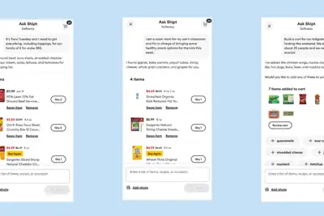
Article URL: https://www.anthropic.com/institute/econ-scenarios Comments URL: https://news.ycombinator.com/item?id=49626373 Points: 164 # Comments: 301
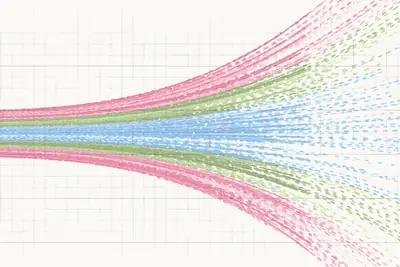